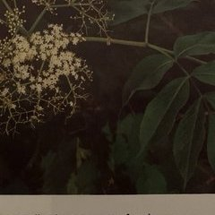

|
Trees (4)
Wildflowers (3)
Canada Elderberry NEW! |
Welcome to Dave's Plant CatalogueThis is my online plant notebook. I started putting these pages together in 1998 so I could keep names, photographs and identification notes in one place. Most of the plants here are things I have seen around Ontario.  MOST RECENT ADDITIONCanada ElderberrySambucus nigra ssp. canadensis
Low-lying ground, swamps and forest edges.
Site note: It's been a tough couple weeks, but the weather is amazing
and the sun brings me to life.
Recent additions
|